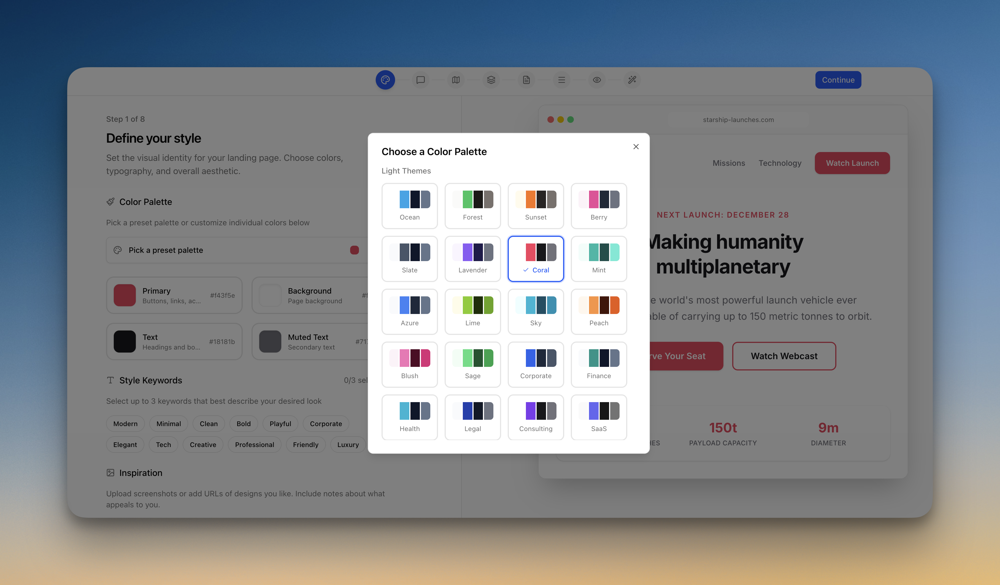
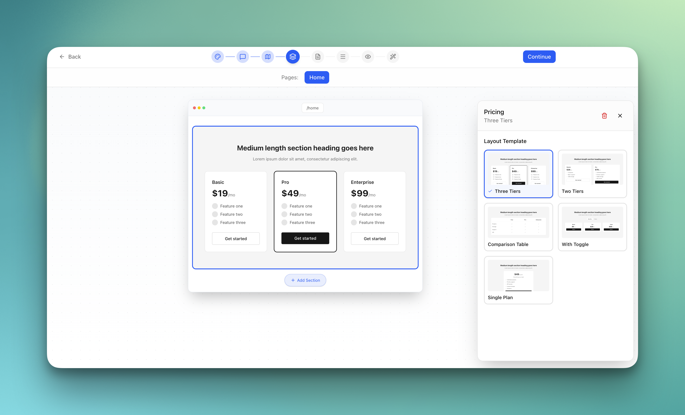

A CLI wizard that turns your landing page vision into structured, AI-ready prompts. Walk through 8 guided steps, then feed the output to any AI coding tool.
npx landfall init
&&
npx landfall dev

42 palettes, Google Fonts, visual keywords

12 types with 5 variants each
No vague prompts. No generic results. Just a structured spec that AI tools can actually follow.
Run npx landfall init to scaffold a landfall/ directory with template config files.
Walk through 8 guided steps: style, tone, sitemap, sections, copy, navigation, preview, and build. Every change saves to JSON in real time.
Click Build. Landfall produces a sequence of focused, self-contained prompts — style system, layout, then each section individually.
Copy the prompts into Claude Code, Cursor, Windsurf, or any AI coding tool. One at a time, in order.
Guided flow covering colors, fonts, tone, structure, sections, nav, preview, and build.
12 section types — hero, features, pricing, FAQ, testimonials — with 5 layout variants each.
Optional Model Context Protocol server lets AI tools pull prompts and report progress automatically.
No accounts, no cloud, no telemetry. Everything lives as JSON files in your project. Works offline.
See wireframe previews across desktop, tablet, and mobile before generating any prompts.
Edit via UI or files directly — changes sync both ways. Full version control on your spec.